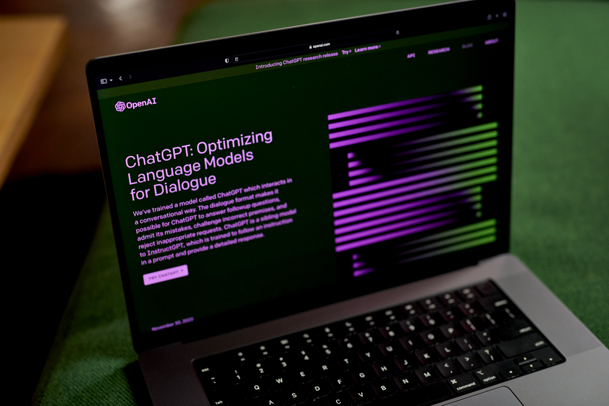

Bocoran Fitur-fitur Terbaru GPT-5 yang Bakal Dipakai ChatGPT

OpenAI akan meluncurkan model artificial intelligence (AI) atau
kecerdasan buatan GPT-5 menawarkan fitur-fitur canggih.
Nantinya, GPT-5 itu akan terintegrasi dengan chatbot AI ChatGPT.
Sebelumnya, ChatGPT berbasis GPT-3.5, tetapi ChatGPT versi terbaru
berbasis GPT-4 yang dirilis pada 14 Maret 2023. OpenAI sendiri telah
mengajukan merek dagang untuk GPT-5 sekaligus menandai langkah menuju
Artificial Generatif Intelligence (AGI) yang akan mengubah lanskap di
dunia.
Beberapa bocoran fitur-fitur GPT-5 adalah: Mengurangi Halusinasi: GPT-5
diharapkan memiliki kemampuan yang lebih baik dalam menghindari
memberikan informasi yang tidak sesuai dengan fakta, mengurangi
kesalahan yang umumnya terjadi di chatbot. Multi-modalitas: GPT-5
diharapkan mampu memproses teks, gambar, video, dan audio, membawa
pengalaman yang lebih lengkap dengan kecerdasan buatan multi-indera.
Efisiensi Komputasi Lebih Tinggi: GPT-5 akan menjadi lebih efisien dalam
penggunaan daya komputasi melalui optimalisasi arsitektur dan
metodologi, sehingga lebih ekonomis dan responsif.
Peningkatan Memori dan Pemahaman Kontekstual: Fitur GPT-5 ini diharapkan
mampu meningkatkan kemampuan memori jangka panjang, memungkinkan
penyimpanan dan pengingatan informasi yang lebih efisien. Lebih Banyak
Input dan Inovasi: GPT-5 akan memberikan lebih banyak fleksibilitas
dalam pengajuan pertanyaan dan terlibat dalam percakapan secara lebih
mendalam. Fitur-fitur ini berpotensi menjadikan GPT-5 sebagai model
terdepan dalam membantu menyampaikan informasi dengan lebih baik. Tentu
saja, pengembangan kecerdasan buatan ini harus dilakukan dengan
hati-hati. Rencananya, GPT-5 akan dirilis pada tahun 2024.